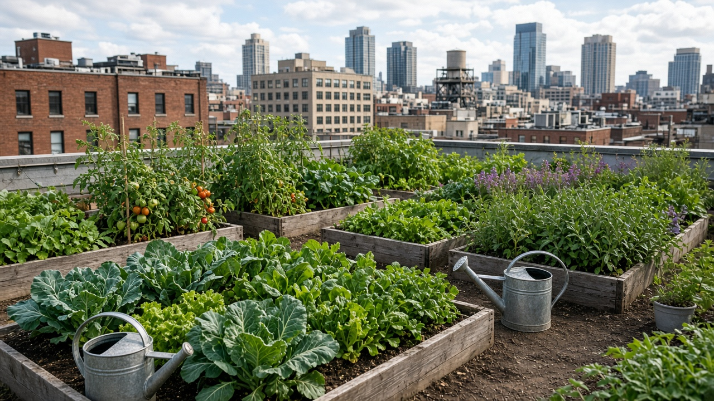
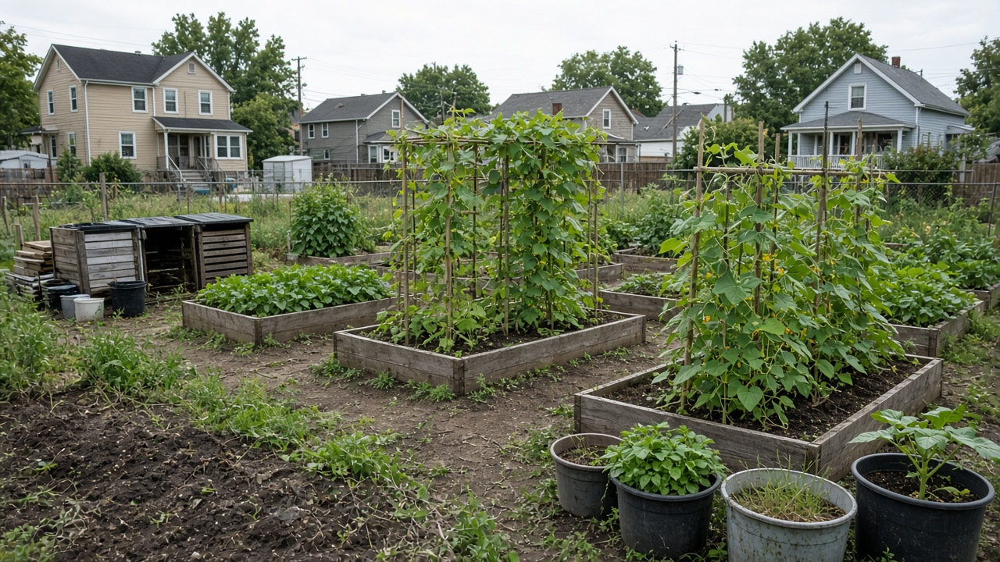
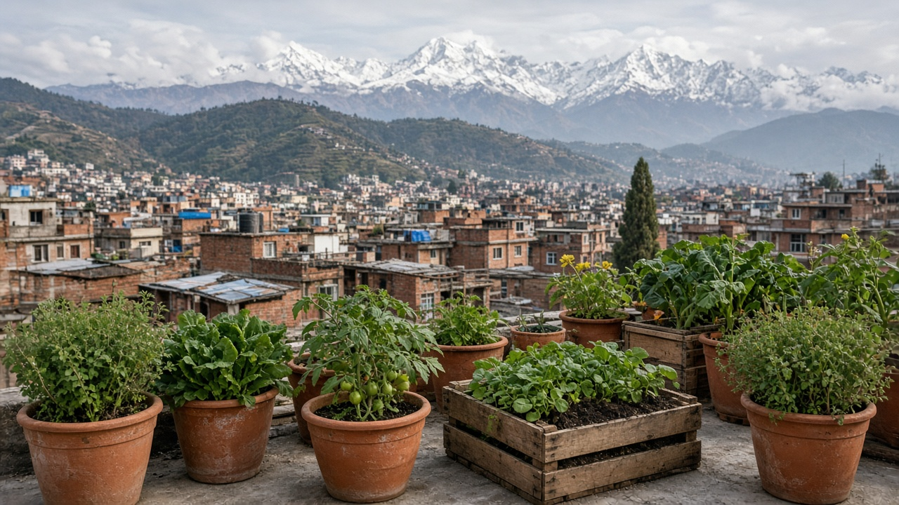

Urban Agriculture and Community Gardens
Published on August 20, 2026

Urban agriculture grows food within cities on rooftops, balconies, vacant lots, schoolyards, and shared garden plots. Community gardens bring neighbors together to cultivate vegetables, herbs, and fruit trees while greening neighborhoods and reducing heat-island effects. These spaces improve access to fresh produce in areas where supermarkets are scarce or expensive, supporting food justice and dietary diversity. Short distances from plot to kitchen cut transport emissions and allow harvest at peak ripeness. Urban farming also teaches children where food comes from and builds ecological literacy amid concrete landscapes.
Successful projects require secure land tenure, clean soil, reliable water, composting systems, and inclusive governance so that all residents benefit regardless of income or background. Cities can integrate urban agriculture into zoning codes, offer tax incentives for green roofs, and convert underused public land into managed garden cooperatives. Container gardening, raised beds, and vertical trellises maximize yield on small footprints. Pollinator-friendly plantings attract bees and butterflies, enhancing biodiversity. Partnerships with food banks distribute surplus harvests to those facing hunger, closing loops between local production and community need.
Challenges include soil contamination, water costs, vandalism, and gentrification that displaces long-standing gardeners when land values rise. Policy safeguards such as long-term leases, soil testing programs, and anti-displacement clauses protect community investments. Scaling urban agriculture does not replace peri-urban farms but complements regional food systems with hyper-local freshness and social cohesion. Workshops on composting, rainwater harvesting, and seasonal planting calendars empower residents to maintain plots through dry seasons and urban heat waves without excessive municipal water use. When planned thoughtfully, city gardens transform idle spaces into productive, educational, and restorative assets that strengthen urban resilience and connect people to the rhythms of growing food.

शहरी कृषिले छत, बालकनी, खाली जग्गा, विद्यालय प्राङ्गण र साझा बगैंचामा शहरभित्रै खाद्य उत्पादन गर्छ। सामुदायिक बगैंचाले छिमेकीलाई तरकारी, जडिबुटी र फलका रूख खेती गर्न जोड्छ, छिमेकीलाई हरियाली बनाउँछ र ताप टापु प्रभाव घटाउँछ। यी स्थानहरूले ठूला खाद्य पसल थोरै वा महँगो क्षेत्रमा ताजा उत्पादनको पहुँच सुधारेर खाद्य न्याय र आहार विविधता समर्थन गर्छन्। खेतबाट भान्सासम्मको छोटो दूरीले यातायात उत्सर्जन काट्छ र पाक्ने बेला काटनी गर्न दिन्छ। शहरी खेतीले बच्चाहरूलाई खाना कहाँबाट आउँछ सिकाउँछ र ठूलो पक्की संरचनायुक्त परिदृश्यमा पारिस्थितिक साक्षरता बढाउँछ।
सफल परियोजनालाई सुरक्षित जमिन स्वामित्व, स्वच्छ माटो, भरपर्दो पानी, कम्पोस्ट प्रणाली र समावेशी शासन चाहिन्छ जसले सबै बासिन्दाले आम्दानी वा पृष्ठभूमि बिना लाभ पाउन्। शहरले शहरी कृषिलाई क्षेत्र नियोजनमा समावेश, हरियो छतमा कर प्रोत्साहन र अप्रयोगित सार्वजनिक जमिनलाई सहकारी बगैंचामा बदल्न सक्छ। भाँडो बगैंचा, उठाएको खेत र ठाडो जालीले सानो ठाउँमा बढी उत्पादन दिन्छ। परागणमा सहयोगी बिरुवाले मौरी र पुतली आकर्षित गरेर जैविक विविधता बढाउँछ। खाद्य बैंकसँग साझेदारीले अतिरिक्त बाली भोका लागि बाँड्छ।
चुनौतीमा माटो प्रदूषण, पानी खर्च, तोडफोड र भूमि मूल्य बढ्दा पुराना बगैंचालाई विस्थापन गर्ने शहरी नवीकरण समावेश छ। दीर्घकालीन भाडा, माटो परीक्षण कार्यक्रम र विस्थापन रोक्ने धाराले सामुदायिक लगानी सुरक्षित गर्छ। शहरी बगैंचाले उप-शहरी खेत प्रतिस्थापन गर्दैन, तर क्षेत्रीय खाद्य प्रणालीलाई स्थानीय ताजापन र सामाजिक एकताले पूरक बनाउँछ। कम्पोस्ट, वर्षा पानी संकलन र मौसमी रोपाइँ पात्रोका कार्यशालाले बासिन्दालाई सुखा र शहरी ताप लहरमा अत्यधिक नगर पानी प्रयोग बिना खेत कायम राख्न सशक्त बनाउँछ। विचारपूर्वक योजना गर्दा, शहरी बगैंचाले निष्क्रिय स्थानलाई उत्पादक, शिक्षात्मक र पुनर्स्थापना सम्पत्तिमा बदल्छ र मानिसलाई खाद्य उत्पादनको लयसँग जोड्छ।

शहरी कृषि छत, बालकनी, खाली ज़मीन, विद्यालय प्रांगण और साझा बगीचों में शहर के भीतर भोजन उत्पादन करती है। सामुदायिक बगीचे पड़ोसियों को सब्ज़ियाँ, जड़ी-बूटी और फल के पेड़ उगाने के लिए जोड़ते हैं, पड़ोस को हरा-भरा बनाते हैं और गर्मी कम करते हैं। ये स्थान सुपरमार्केट कम या महँगे क्षेत्रों में ताजा उत्पाद की पहुँच सुधारकर खाद्य न्याय और आहार विविधता का समर्थन करते हैं। खेत से रसोई तक की छोटी दूरी परिवहन उत्सर्जन काटती है और पकने पर कटाई की अनुमति देती है। शहरी खेती बच्चों को खाना कहाँ से आता है सिखाती है और ठोस संरचनायुक्त परिदृश्य में पारिस्थितिक साक्षरता बढ़ाती है।
सफल परियोजना को सुरक्षित भूमि स्वामित्व, स्वच्छ मिट्टी, भरोसेमंद पानी, खाद प्रणाली और समावेशी शासन चाहिए जब सभी निवासी आय या पृष्ठभूमि बिना लाभ पाएँ। शहर शहरी कृषि को क्षेत्र कानून में शामिल, हरी छत पर कर प्रोत्साहन और अप्रयुक्त सार्वजनिक ज़मीन को सहकारी बगीचों में बदल सकता है। कंटेनर बगीचे, उठे खेत और सीधे ट्रेलिस छोटे स्थान पर अधिक उत्पादन देते हैं। परागण में सहायक पौधे मधुमक्खी और तितली आकर्षित करके जैव विविधता बढ़ाते हैं। खाद्य बैंक के साथ साझेदारी अतिरिक्त फसल भूखों को बाँटती है।
चुनौती में मिट्टी प्रदूषण, पानी खर्च, तोड़फोड़ और भूमि की कीमत बढ़ने पर पुराने बगीचों को हटाने वाला शहरी नवीकरण शामिल है। दीर्घकालीन पट्टा, मिट्टी परीक्षण कार्यक्रम और विस्थापन रोकने वाली धारा सामुदायिक निवेश सुरक्षित करती है। शहरी बगीचे उप-शहरी खेत की जगह नहीं लेते, पर क्षेत्रीय खाद्य प्रणाली को स्थानीय ताज़गी और सामाजिक एकता से पूरक बनाते हैं। खाद, वर्षा जल संचयन और मौसमी रोपाई कैलेंडर के कार्यशाले निवासियों को सूखे और शहरी गर्मी लहर में अत्यधिक नगर पानी उपयोग बिना खेत बनाए रखने में सशक्त बनाते हैं। विचारपूर्वक योजना पर शहरी बगीचे निष्क्रिय स्थान को उत्पादक, शिक्षात्मक और पुनर्स्थापना संपत्ति में बदलते हैं और लोगों को खाना उगाने की लय से जोड़ते हैं।